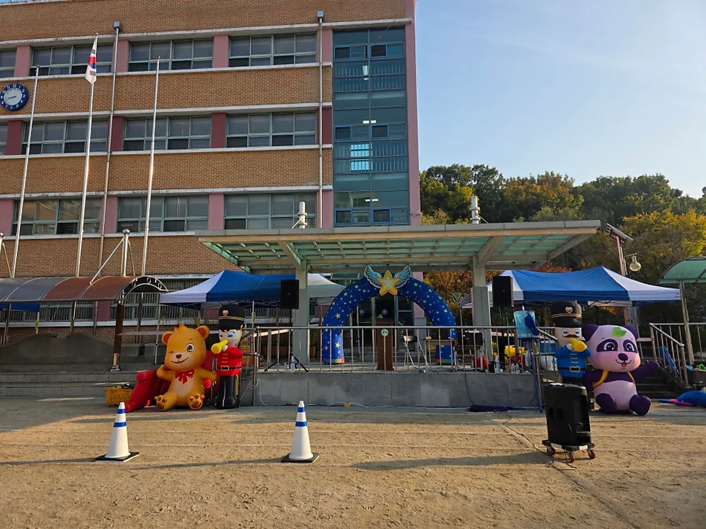
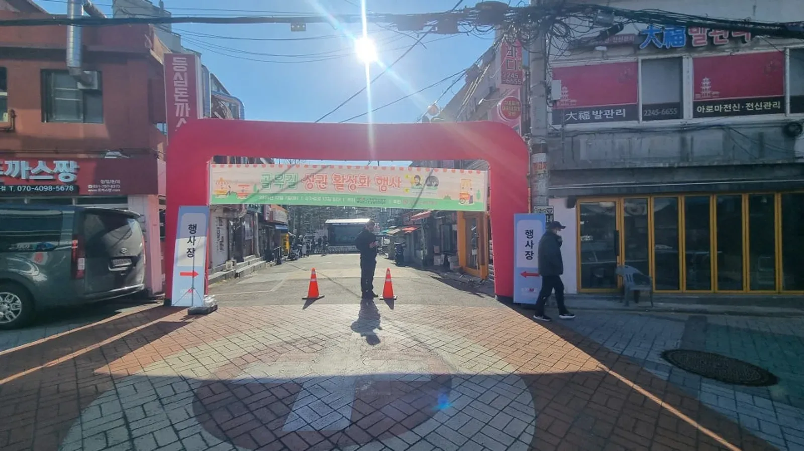

행사 준비 · 2026년 11월 9일
야외행사 우천 대안 준비: 장소 전환과 연락 기준 정리
야외행사 우천 대안은 비가 오는 날 고민하는 일이 아니라 행사 전에 A안과 B안, 결정할 사람, 연락 순서를 문서 한 장으로 맞춰 두는 일입니다. 이 글은 주최 담당자가 승인자 지정부터 대체 장소 확인, 두 번의 판단, 안내 문구, 계약 점검까지 순서대로 채울 수 있게 구성했습니다.

- 야외행사 우천 대안은 A안(야외)과 B안(대체 장소) 모두 승인자를 먼저 정해 둡니다.
- 대체 장소의 예약과 출입 가능 여부는 주최 측이 직접 확인하고, 확인한 사람과 방법을 기록합니다.
- 판단은 사전 점검과 당일 점검 두 번으로 나누고, 날씨 정보와 현재 상태와 시설 관리자 의견을 함께 봅니다.
- 장비, 일정, 이동 변경은 한 번에 묶어 알리고, 스태프용과 참가자용 문구를 따로 준비합니다.
- 취소와 변경 조건은 계약서에서 확인하고, 모르는 부분은 서면으로 물어 답을 받아 둡니다.

야외행사 우천 대안, 승인자와 가능한 장소부터 정하기
비 예보가 뜨면 담당자, 스태프, 장소 관리자가 각자 판단해서 서로 다른 안내가 나가는 일이 흔합니다. 장소를 어디로 옮길지보다 먼저 누가 최종 승인하는지부터 정해야 합니다.
행사 전에 A안과 B안에 이름을 붙이고, 어느 안으로 갈지 승인하는 사람을 한 명으로 정해 둡니다. 승인자와 연락이 닿지 않을 때 대신 판단할 사람도 함께 적습니다.
A안은 계획한 야외 진행이고, B안은 장소를 옮기거나 구성을 바꾸는 진행입니다. 문서는 길 필요 없이 한 장이면 충분합니다.
- A안: 야외 진행안과 최종 승인자, 연락 담당자
- B안: 대체 장소 또는 변경 구성과 최종 승인자, 연락 담당자
- 승인자가 닿지 않을 때 대신 판단할 사람
- 스태프와 참가자에게 안내를 내보낼 사람
2. 대체 장소는 이름만 적어서는 쓸 수 없습니다
B안에 실내 장소를 적어 두어도 예약이 되어 있지 않거나 행사 당일 출입이 막혀 있으면 소용이 없습니다. 예약, 출입, 장비를 들여놓을 통로는 주최 측이 시설 관리자에게 직접 확인합니다.
진행 업체가 대체 장소나 이동 수단을 대신 잡아 준다고 가정하지 마세요. 확인된 결과를 업체에 전달해 주시면 그 장소에 맞게 장비와 진행 순서를 조정합니다.

확인할 때는 누구에게 어떤 방법으로 확인받았는지도 함께 적습니다. 구두로 들은 내용은 나중에 서로 다르게 기억하기 쉬우니 문자나 이메일로 남기는 쪽이 안전합니다.
- 대체 장소 예약 상태와 사용 가능한 구역
- 출입 가능 여부와 출입문 · 승강기 · 주차 이용 방식
- 장비 반입 통로와 반입 가능한 시간대
- 시설 관리자 연락처와 당일 연락 가능 여부
- 참가자 수용과 야외 구성의 변경 가능 범위
3. 판단은 사전 점검과 당일 점검, 두 번에 나눕니다
우천 판단을 한 번에 끝내려 하면 예보가 바뀔 때마다 흔들립니다. 두 단계로 나누면 준비와 확정이 분리되어 편해집니다.
첫 번째는 사전 점검으로, 날씨 정보를 보고 B안 준비를 켜 둘지 정합니다. 두 번째는 당일 점검으로, 현장에서 야외 진행이 가능한지 최종 확정합니다.
이 글은 강수량 같은 숫자 기준을 제시하지 않습니다. 장소와 행사 성격마다 다르므로 시설 운영 기준과 장비의 사용·중단 조건은 담당 전문가와 확인해야 합니다.
- 날씨 업데이트: 최신 예보와 변경 사항을 확인한 시각을 기록합니다.
- 현재 상태: 현장 담당자가 바닥, 통로, 설치 구역을 직접 보고 전달합니다.
- 시설 관리자 의견: 장소 사용 여부와 제한 사항을 관리자에게 확인합니다.
사전 점검에서 B안 준비를 켰다고 행사가 바뀐 것은 아닙니다. 당일 점검에서 승인자가 A안 유지 또는 B안 전환을 확정하고 그 시각과 근거를 적어 두면 이후 안내가 수월합니다.

장소 이용 중지 안내나 현장 안전 담당자의 중단 판단은 변경 승인자가 임의로 뒤집지 않습니다. 시설 이용 조건과 안전 관리 절차를 먼저 따르고, 승인자는 그 범위에서 변경안을 조율합니다.
4. 담당자별 결정과 연락을 표 한 장으로 정리합니다
아래 표를 복사해 행사에 맞게 채워 두면 비 오는 날 누가 무엇을 하는지 바로 보입니다. 이름과 연락처는 행사 전에 채우고, 빈칸이 남은 곳이 가장 위험한 자리입니다.
| 항목 | 결정 담당 | 연락 담당 | 장소 | 바뀌면 생기는 일 |
|---|---|---|---|---|
| A안 유지 | 최종 승인자 | 현장 연락 담당 | 원래 야외 장소 | 기존 장비 배치와 일정을 그대로 진행 |
| B안 전환 | 최종 승인자 | 스태프 안내 담당 | 확인된 대체 장소 | 장비 · 동선 · 진행 순서 재조정 |
| 일정 조정 | 주최 담당자 | 참가자 안내 담당 | 대체 장소 또는 야외 | 시작 시각과 순서 변경 안내 |
| 이동 변경 | 주최 담당자 | 참가자 안내 담당 | 집결 장소와 이동 경로 | 이동 수단 · 집결 위치 재확인 |
| 중단 또는 취소 | 최종 승인자 | 전체 안내 담당 | 해당 없음 | 계약 조건에 따른 처리 확인 |
5. 변경 안내는 한 번에 묶어서, 확정된 내용만 보냅니다
장소가 바뀌면 장비 배치, 일정, 이동이 한꺼번에 달라집니다. 따로 알리면 참가자가 앞뒤가 다른 문자를 두세 통 받게 되므로 한 번에 묶어서 보내는 편이 혼선이 적습니다.
진행 업체와는 변경된 장소와 반입 조건을 공유하고, 장소가 확정되면 필요한 장비를 다시 확인합니다. 힐링엔터테인먼트는 장소 · 진행 시간 · 필요한 장비를 확인한 뒤 프로그램을 구성하기 때문에 장소가 바뀌면 이 확인을 한 번 더 거칩니다.
아래 문구는 그대로 가져다 쓸 수 있습니다. 괄호 안은 행사에 맞게 채웁니다.
- 스태프용: [행사명]은 최종 승인자 판단에 따라 (A안 유지 / B안 전환)으로 진행합니다. 담당 위치와 장비 배치는 (변경 내용)을 확인해 주세요. 문의는 문자로 (연락 담당)에게 남겨 주세요.
- 참가자용: 안녕하세요. [행사명] 진행 장소와 방식이 (변경 내용)으로 안내됩니다. 집결 위치는 (장소)이며 시작 시각은 (안내 시각)입니다. 변경 사항이 생기면 이 번호로 다시 알려 드리겠습니다.
문구에는 확정된 내용만 넣고, 아직 모르는 것은 확인 중이라고 솔직하게 적습니다. 추측으로 쓴 내용이 바뀌면 안내를 두 번 해야 합니다.
6. 취소와 변경 조건은 계약서에서 직접 확인합니다
우천으로 장소가 바뀌거나 행사가 연기, 중단될 때 어떤 조건이 적용되는지는 계약마다 다릅니다. 이 글은 환불이나 비용 여부를 단정하지 않습니다.
계약서와 견적 문서에서 아래 항목을 직접 확인하고, 불분명한 부분은 서면으로 질문해 답을 받아 두세요.
- 취소와 변경의 정의, 그리고 누가 요청할 수 있는지
- 장소 변경 시 장비 · 인력 · 이동에 대한 조건
- 일정 변경과 연기 때 협의 방법과 연락 창구
- 대체 장소 · 이동 수단 · 보험 등 업체가 맡지 않는 부분의 담당 구분
견적 단계에서 장소와 필요한 장비를 함께 적어 두면 변경 협의가 쉬워집니다. 자동 견적서는 항목을 고를 수 있고 금액은 표시되지 않으며, 일정과 조건은 견적 문의로 상담합니다.
실제 행사 장면은 현장 갤러리에서 볼 수 있습니다. 야외 거리 행사 사례는 동대문 상권 활성화 축제 준비 글에도 정리해 두었습니다.
자주 묻는 질문
우천 대안은 언제까지 정해 두면 좋나요?
특정 시점을 정해 드릴 수는 없지만, 계약과 견적을 확정하기 전에 A안과 B안, 승인자를 함께 적어 두면 변경 협의가 쉬워집니다. 날짜는 행사마다 달라 주최 측과 상담해 정합니다.
대체 장소 예약도 진행 업체가 해 주나요?
대체 장소 예약과 출입 확인은 주최 측이 시설 관리자에게 확인할 일입니다. 확정된 장소가 정해지면 그 장소에 맞게 장비와 진행 순서를 조정하는 상담을 할 수 있습니다.
비 예보가 있으면 바로 실내로 변경해야 하나요?
그렇게 단정할 수 없습니다. 날씨 업데이트, 현재 상태, 시설 관리자 의견을 함께 보고 최종 승인자가 사전 점검과 당일 점검에서 판단합니다.
숫자로 된 안전 기준은 이 글에서 제시하지 않습니다.
행사 당일에는 어떻게 연락하면 되나요?
행사 진행 중에는 통화가 어려울 수 있어 문자나 카톡으로 남겨 주시는 편이 좋습니다. 우천 때 쓸 연락 수단은 상담에서 미리 정해 두세요.
행사 날짜가 정해지셨나요?
날짜 · 지역 · 인원 · 행사 종류만 알려 주시면 행사에 맞춰 상담 · 견적을 안내드립니다. 행사 중엔 통화가 어려우니 문자 · 카톡을 남겨 주세요.